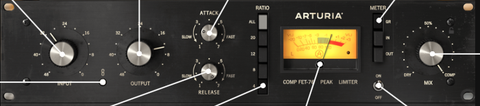

Voces Líderes
Mantiene las voces al frente de la mezcla con una consistencia de nivel impecable y esa calidez “in-your-face” característica del Pop y Rock moderno.
VST3/AU/AAX · Win & MacOS

Haz clic en los puntos para explorar los controles del plugin.
El Arturia Comp FET-76 recrea minuciosamente el circuito clásico D/E del UREI 1176, modelando la respuesta de sus transistores FET y el amplificador Clase A.
Aporta el ponche, la presencia y la calidez armónica inolvidable que definió décadas de producciones legendarias, combinándolo con total flexibilidad digital.
Mantiene las voces al frente de la mezcla con una consistencia de nivel impecable y esa calidez “in-your-face” característica del Pop y Rock moderno.
Añade una pegada brutal a la caja y transforma micrófonos de sala de batería en paredes de sonido gigantescas y enérgicas.
Proporciona sustain denso para bajos eléctricos y compacta guitarras rítmicas para encajarlas perfectamente en la mezcla.
Tiempos de respuesta medidos en microsegundos, capaces de domar transitorios agresivos y controlar la envolvente con precisión.
Modo de compresión extrema que activa todas las proporciones simultáneamente, generando saturación rica, distorsión y un bombeo explosivo único.
Permite elevar la ganancia de entrada para saturar el circuito manteniendo un nivel de salida constante, facilitando comparaciones A/B objetivas.